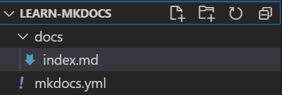
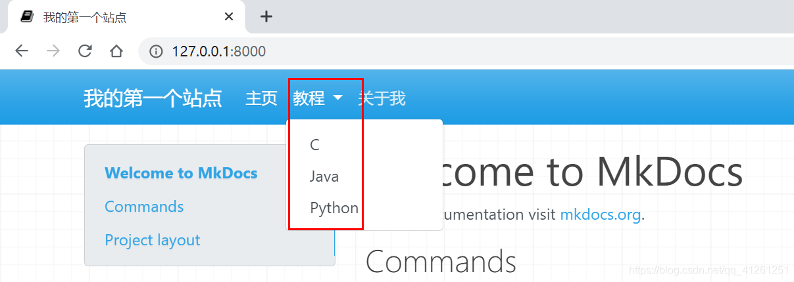
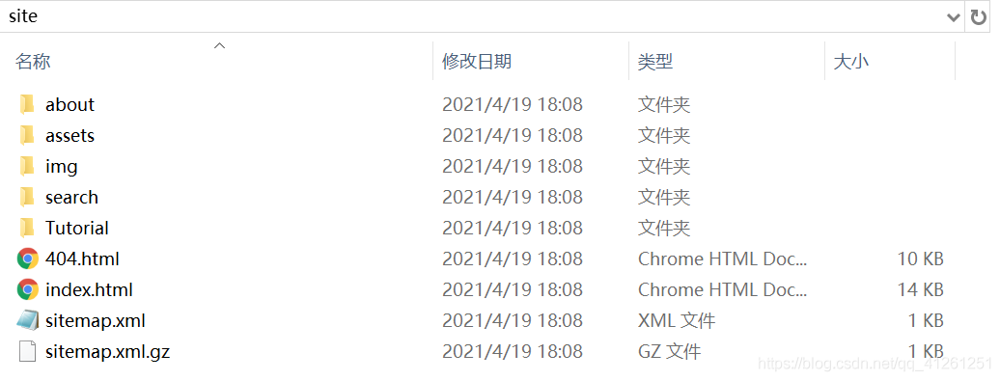

利用mkdocs与GitHub搭建个人博客
mkdocs的安装
利用python下的pip指令安装
pip install mkdocs
查看mkdocs的版本
mkdocs --version
mkdocs的使用
创建本地静态站点
mkdocs new <dir_name>
这个命令会在当前目录下创建一个目录<dir_name>。
目录结构如下：

-
在创建的目录下，有一个子目录docs，其中包含了源文件、页面等数据
-
在创建的目录下，有一个文件mkdocs.yml，这就是配置（设置）文件
然后我们cd到创建的目录下，运行：
mkdocs serve
即可创建本地静态站点
[root@MiWiFi-RA81-srv myblog]# mkdocs serve
INFO - Building documentation...
INFO - Cleaning site directory
INFO - Documentation built in 0.17 seconds
INFO - [09:31:49] Watching paths for changes: 'docs', 'mkdocs.yml'
INFO - [09:31:49] Serving on http://127.0.0.1:8000/
在浏览器输入地址http://127.0.0.1:8000即可进入本地页面
在运行站点的同时，我们可以实时修改站点信息，mkdocs会更新并展示在浏览器上，方便我们预览。
我们可以修改配置文件mkdocs.yml中的站点名site_name为我们自己设置的名字
有关配置文件
配置文件是一个YAML格式文件，关于这种格式的语法请参看：
https://docs.ansible.com/ansible/latest/reference_appendices/YAMLSyntax.html
https://ansible-tran.readthedocs.io/en/latest/docs/YAMLSyntax.html
菜鸟教程：https://www.runoob.com/w3cnote/yaml-intro.html
添加页面
在新建站点时，mkdocs为我们创建了一个页面index.md，我们同样可以自己添加页面：
在docs目录下创建页面about.md，页面内容任意
然后在配置文件mkdocs.yml中添加以下配置项：
nav:
- 主页: index.md
- 关于我: about.md
这样我们就成功地添加了一个页面。
我们也可以添加多级页面，首先在docs目录下新建一个目录，此处命名为Tutorial，然后再该目录下创建文档，此处创建三个文档：C.md、Java.md和Python.md。目录结构如下：

这里的docs是保存页面markdown文本的文件夹
然后再配置文件中修改配置项：
nav:
- 主页: index.md
- 教程:
- C: Tutorial/C.md
- Java: Tutorial/Java.md
- Python: Tutorial/Python.md
- 关于我: about.md
浏览器显示如下：

三四五级页面同理
除了在导航栏上设置页面，我们也可以在页面上通过markdown语法进行跳转：
[文字](要跳转的地址)
比如，在about.md中要跳转到Java.md页面：
[去Java.md页面](./Tutorial/Java.md)
当你点击这个链接时，就会跳转到对应的页面：

更改主题
mkdocs默认有两个主题：mkdocs和readthedoc，默认使用mkdocs。
我们在配置文件中修改，使用readthedocs主题：
theme:
name: readthedocs
我们也可以使用第三方主题，第三方主题详细列表如下：
https://github.com/mkdocs/mkdocs/wiki/MkDocs-Themes
可以参照具体的主题使用教程，进行配置。
在本例中，我们配置一个名为material的主题。
首先利用pip下载相应的主题：
pip install mkdocs-material
然后在配置文件中修改主题：
theme:
name: material
部署站点（部署站点到guihub服务器）
mkdocs build命令
这个命令会在当前目录下生成一个目录site，这个目录中包含了静态站点的页面内容。

github
项目页面
我们可以在GitHub中创建一个仓库，名为myblog
然后在本地myblog下打开git，并将当前目录设置为一个仓库，然后与GitHub新创建的仓库myblog连接：
git init
git remote add origin <yourlinks>
然后在本地myblog目录下打开控制台，执行以下命令：
mkdocs gh-deploy
这个命令会在GitHub项目上创建一个gh-pages分支（gh-pages分支用来保存github服务器中站点的页面内容），并执行mkdocs build命令，然后将当前目录中的site目录下的内容推送到远程的gh-pages分支：
浏览器访问http://YourGithubUsername.github.io/repo-name即可：
参考文档：
https://blog.csdn.net/qq_41261251/article/details/116021097
https://squidfunk.github.io/mkdocs-material/creating-your-site/
将本地站点同步到github服务器
准备工作
将github上的myblog仓库clone到本地
步骤
-
执行
mkdocs build命令（将页面内容同步到site文件夹） -
将Linux中的site文件夹替换掉mac中的site文件夹（我的linux目前还上不了github（笑））
-
将本地新保存的
site文件夹中的文件（本地静态站点的页面内容）通过gitpush到GitHub上的gh-pages分支
baijiale@Bais-Mac myblog % git add .
baijiale@Bais-Mac myblog % git commit -m <updatemane>
baijiale@Bais-Mac myblog % git push origin gh-pages
- 刷新你的网页
https://syxb2.github.io/myblog/
注：Mkdocs的官方说明
Commands
mkdocs new [dir-name]- Create a new project.mkdocs serve- Start the live-reloading docs server.mkdocs build- Build the documentation site.mkdocs -h- Print help message and exit.
Project layout
mkdocs.yml # The configuration file.
docs/
index.md # The documentation homepage.
... # Other markdown pages, images and other files